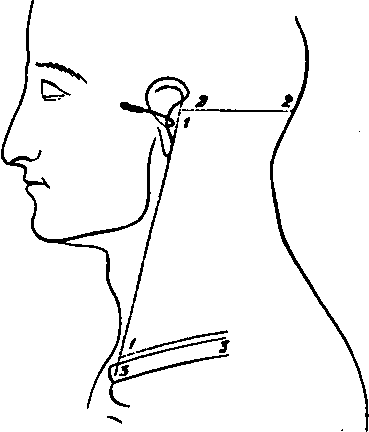

A Dissection To Expose The Vertebral Artery
Description
This section is from the book "A Manual Of Dissections Of The Human Body", by R. E. Carrington. Also available from Amazon: A manual of dissections of the human body.
A Dissection To Expose The Vertebral Artery
Position
A block should be placed under the shoulders, the head allowed to hang supported by a smaller one, and the face rotated to the opposite side on which the dissection is to be made.
I. Skin Incisions
1. From immediately in front of the Mastoid process to the Sterno-clavicular articulation.
2. Transversely from the upper end of No. 1 to the Occipital tuberosity.
3. Transversely from the lower end of No. 1 along the upper border of the Clavicle for the inner half. Reflect the flap backwards and expose the superficial fascia containing—
No. 2.
1. The Platysma myoides muscle at the lower and front part.
2. Cutaneous arteries from:—The Posterior Auricular behind the ear. The Occipital upon the Occiput. The Ascending Cervical at the lower part through the Sterno-mastoid muscle. At the upper part of the same muscle from the Sterno-mastoid branch of the Occipital or External Carotid. From the Superficial Cervical over the Trapezius muscle. From the Suprascapular over the Clavicle.
3. The upper part of the External Jugular vein.
4. The Great Auricular nerve at its distribution over the Mastoid process, and the commencement of the branches to the Pinna and face.
5. The Small Occipital nerve perforating the deep fascia near the skull.
6. The Great Occipital nerve perforating the fascia lata about half an inch from the anterior border of the Trapezius muscle, close to the Occiput.
7. The Third Occipital nerve perforating behind the distribution of the Great, and running up to the Occipital protuberance.
8. Cutaneous filaments from the third and fourth Cervical nerves ramifying over the lower part of the Trapezius muscle.
9. Filaments of the Superficial Cervical nerve perforating the Platysma muscle over the centre of the Sterno-mastoid muscle.
II
Remove the Platysma muscle, dissecting out at the same time the Sternal and Clavicular branches of the third and fourth Cervical nerves. The External Jugular Vein will now be displayed as far as the point of its perforation of the deep fasoia at the lower part of the posterior triangle.
III
Clean away the fascia lata, preserving and dissecting further the preceding vessels and nerves to the extent that this is possible without removal of muscles. There will now be exposed—
1. The Sterno-mastoid muscle in front.
2. The anterior portion of the Trapezius muscle behind.
3. In the angular interval between the preceding muscle at the skull, either a dense fascia or the Complexus muscle.
4. The Splenius capitis muscle, and the slip of the Splenius colli to the transverse process of the Atlas. This muscle runs downwards and backwards highest of those forming the floor of the posterior triangle.
5. The attachments of the Levator anguli scapula muscle to the upper three or four Cervical transverse processes.
6. The Scalenus medius muscle immediately below the preceding, and behind the Sterno-mastoid muscle.
7. The posterior edge of the Scalenus anticus muscle, in the case of a narrow Sterno-mastoid muscle.
8. The posterior belly of the Omo-hyoid muscle crossing the Scalenus medius obliquely at the lower part.
9. Branches of the Superficial and Ascending Cervical arteries in the upper part of the posterior triangular space.
10, The Transverse Cervical artery crossing from beneath the lower part of the Sterno-mastoid muscle and passing under the Omo-hyoid muscle.
11. The third part of the Subclavian artery turning over the first rib, and the Posterior Scapular artery when it is a branch of this part of the vessel.
12. The whole length of the External Jugular vein and its sinus joined below by the Transverse Cervical, Suprascapular and Posterior Jugular branches, and communicating over the Clavicle with the Cephalic vein, and over the Sterno-mastoid muscle with the Anterior Jugular vein.
13. The Posterior Auricular nerve, artery, and vein behind the Pinna.
14. The Great Auricular nerve turning round the posterior border of the Sterno-mastoid muscle at its upper part and dividing into branches for the skin over the Mastoid process, Pinna, and the Parotid gland.
15. The Small Occipital nerve running up the posterior border of the Sterno-mastoid muscle.
16. The Great Occipital nerve now seen perforating the Trapezius muscle near its anterior border and ramifying over the Occiput accompanied by the Occipital artery and vein.
17. The Third Occipital nerve perforating the Trapezius internal to the preceding.
18. The Superficial Cervical nerve turning over the Sterno-mastoid muscle, and running transversely across beneath the External Jugular vein.
19. The superficial descending Sternal and Clavicular branches of the Cervical plexus.
20. The Spinal-accessory nerve crossing transversely from the upper third of the Sterno-mastoid muscle downwards and backwards to the Trapezius muscle.
21. A branch of the Cervical plexus from the third nerve to the Levator anguli scapulæ muscle.
22. Branches from the third and fourth Cervical nerves to the Trapezius muscle. They accompany the Spinal-accessory nerve and communicate with it, and some perforate the Trapezius muscle and supply the skin over it. These have been mentioned with the superficial fascia.
23. The Phrenic nerve in case the Scalenus anticus muscle is exposed.
24. The fifth, sixth, and seventh Cervical nerves forming part of the Brachial plexus.
25. The nerve to the Rhomboid muscle perforating the outer border of the Scalenus medius muscle at the upper part.
26. The Posterior Thoracic nerve perforating the same muscle lower down, and running down behind the Brachial plexus.
27. The Suprascapular nerve arising from the cord formed by the junction of the fifth and sixth nerves, and crossing the space transversely a little above the Clavicle.
28. The nerve to the Subclavius muscle running down over the third part of the Subclavian artery.
29. The branch from the Descendens noni nerve to the posterior belly of the Omo-hyoid muscle, passing from beneath the Sterno-mastoid to the lower border of the muscle it supplies.
30. The Glandulæ concatenatæ along the posterior border of the Sterno-mastoid muscle, and a small piece of the Parotid gland immediately in front of the Mastoid process.
Continue to:
- prev: A Dissection To Expose The Structures That Are Seen On The Removal Of The Outer Wall Of The Orbit
- Table of Contents
- next: A Dissection To Expose The Vertebral Artery. Continued